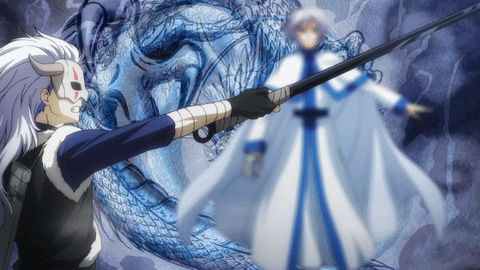

Yona of the Dawn
- Home
- Characters
- Dragons
- News
Shin Ah
Blue Dragon
Shin Ah is the inheritor of the Blue Dragon's
eyes. The village he lives in considers his powers a curse, so
much that Shin Ah's mom killed herself after she learned that her
child was born with the Blue Dragon's eyes. They believe that his
eyes turn people to stone and generally avoided him as a child, so
Shin Ah became very quiet and reserved. He was taught swordsmanship
by the previous Dragon, Ao, to protect the village where he lives.
After Ao died, Shin Ah protected the village from an army,unleashing
his power on them. This forced the village into hiding, so they would
not be targeted.
Shin Ah's eyes have the ability to see great
distances and paralyze anyone who looks into them. However, there
is backlash and he becomes paralyzed for a short time as well.
Shin Ah usually covers his face with a mask to avoid making eye contact,
but starts wearing a cloth tied around his head after he decies to help Yona, because
the mask attracts attention. He is thankful to Yona for being
the first one to treat him with kindness. He maily uses a sword in battle,
and only uses his power as a last resort.<>h5
